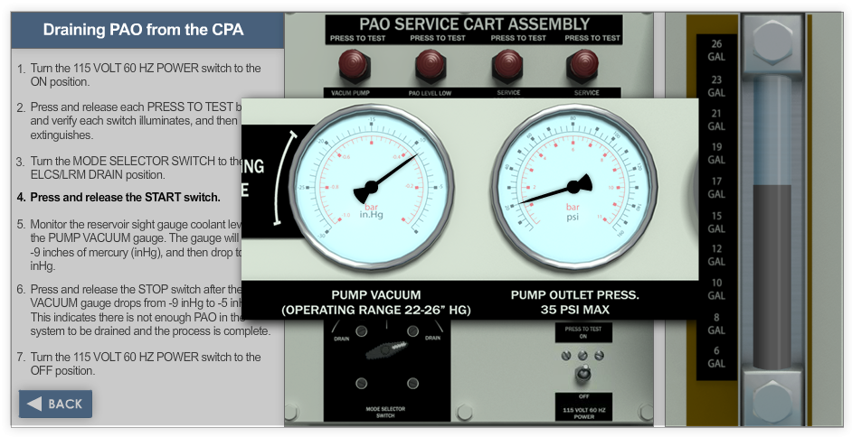

Creativity
Before I moved into research and product design, I spent years doing production work — 3D modeling, animation, texture work — on entertainment and defense programs. That background shaped how I think about craft, durability, and what it means to build something that has to hold up under real conditions.
Creative previews



Designing the E2-D training experience across courseware and simulation
I led the interface and visual implementation for a long-running training program, then helped reshape the delivery model so the team could actually ship it on time.
This three-year program covered the design and implementation of the courseware and PC-simulation experience for the E2-D Advanced Hawkeye training curriculum. My role combined leadership, interface design, 3D asset work, and team coordination across a large visual production effort.
The visual side of this program was substantial — a full UI system, 3D-modeled aircraft cockpit environments, instrumentation graphics, and simulation screens built to hold up under years of classroom use. The design had to work without a designer in the room — every state labeled, every interaction predictable, every asset production-ready from day one.
Media Designer / Animation & Texture Artist
Capital Cargo International Airlines; Century III / Universal Studios
Before the research work, I was doing motion design, 3D modeling, and texture work for entertainment and industrial clients. At Century III, that meant experiential projects tied to Universal Studios. The Disney work — content for Epcot's Illuminations show — ran for over a decade past its original one-to-two year expectation. Early in a career, that kind of durability teaches you something: the difference between work that's finished and work that's actually done.
A foundation built across design, delivery, and experiential work
That period set the terms for how I've approached every project since. Entertainment work is unforgiving — audiences feel when something is off, even if they can't say why. Defense work is unforgiving in a different way — someone is going to depend on this in a context where errors cost more than a bad review. Both taught me to care about craft at a level of detail most product work never demands. I carried that into research, and I don't think I'd be as good at the analytical side without it.
Let’s have a conversation.
If you’re working through a meaningful problem and need clearer signals, I’d be glad to talk. I’m especially drawn to work that sits at the intersection of people, complexity, and important decisions.
A good conversation is usually a better start than a formal intake form.